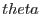
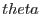

Dealing with ellipses is complicated by the fact that there are at least two convenient ways to parameterise an ellipse, which I will call the `rotated' and `phase' forms. In the `rotated' form the ellipse is specified by two semiaxes and and a an angle of rotation  . In these terms the ellipse is specified most transparently by three equations:
. In these terms the ellipse is specified most transparently by three equations:
The ellipse in `phase' format is specified by two amplitudes  and and a phase
and and a phase  by two parametric equations in  as follows:
by two parametric equations in  as follows:
If an ellipse is thought of as a squashed circle, is the angle around the original circle.
Rotations of coordinate system are easily accommodated in the `rotated' format; changes of aspect ratio of the coordinate system are better accommodated in the `phase' format.
Subroutines are given for translating between the two formats:
subroutine ellipsePhaseToAngle(xAmp, yAmp, phase&
, shortSemiAxis, longSemiAxis, rotatedAngle)
real(single), intent(in) :: xAmp, yAmp, phase
real(single), intent(out) :: longSemiAxis, shortSemiAxis, rotatedAngle
end subroutine ellipsePhaseToAngle
subroutine ellipseAngleToPhase(shortSemiAxis, longSemiAxis, rotatedAngle&
, xAmp, yAmp, phase)
real(single), intent(in) :: longSemiAxis, shortSemiAxis, rotatedAngle
real(single), intent(out) :: xAmp, yAmp, phase
end subroutine ellipseAngleToPhase